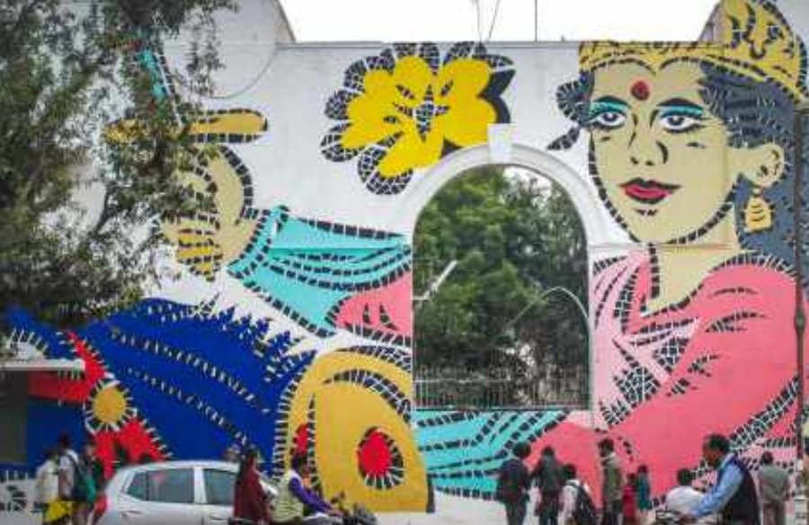
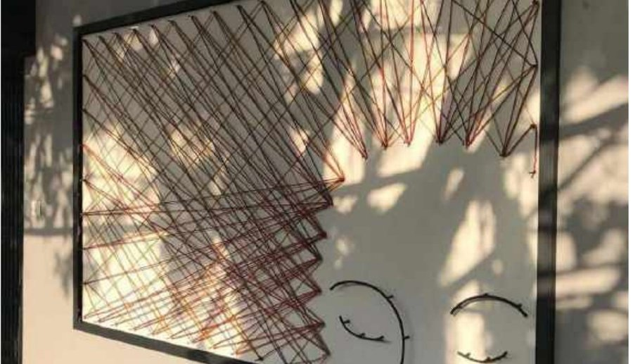

Architecture & Interior Design
Spatial experience first — structure follows.
I'm an architect and interior designer based in Berlin, working across workplace strategy, cultural adaptive-reuse and retail interiors. My practice has taken me through New Delhi, New York and Berlin, and I now work as a Managing Director leading corporate design projects.
About
From street art in Delhi to office towers in Berlin
My path started with a B.Arch in New Delhi and a dissertation on how street art reshapes public space — work that put me on scaffolding with muralists as often as at a drafting table. An MA in Interior Design at Berlin International followed, then practice across Morphogenesis, AVA Studio and my own studio, The Lazy Owl, before I moved into workplace strategy. Today I work as a Managing Director, leading office design, relocation planning and "New Ways of Working" projects for corporate clients.
Between Delhi, New York and Berlin, the thread running through my work has been the same: buildings and interiors should be judged by how they feel to stand in, not just how they draw.
Selected work
All projects → Project
Project
Arthalle X
Reprogramming a historic Berlin Markthalle into a Makers' Market.
 Project
Project
Boxfit Fitness
A kickboxing studio with grunge interiors for a night-club-gym energy.
LOT-EK: Objects + Operations
Contributed research for LOT-EK's 2017 monograph on container architecture.

ProjectCollaboration with Lady Aiko
Working on Lodhi Art District, Delhi, for the St+art India Foundation.
 Project
Project
Haus der Mitwirkung
A "House of Participation" reworking the former Haus der Statistik.

ProjectStreet Art Installation in an Urban Village
A commissioned art installation for a women's hostel in Delhi.
 Project
Project
Uhrwerk Pop-Up
A backlit corridor staging a Berlin watch brand's first store.
 Project
Project
Re-Inventing Heritage
Reimagining Delhi's heritage monuments as venues for art and festivals.
Connecting the City to the Yamuna via Urban Art
Bachelor thesis proposing an arts centre inside a derelict power plant.
Academic ResearchPublic Art Study and Project
Bachelor dissertation on how street art transforms public space.
 Studio
Studio
The Lazy Owl
Founded and grew a hand-crafted paper-goods and craft-education studio.